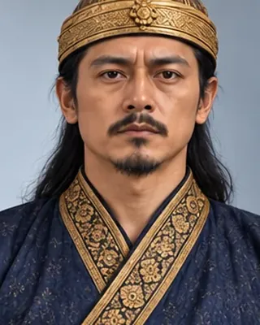

Suhung (Samaguria Roja)
সমগুৰিয়া ৰজা
1674–1675 · Twenty-fourth Ahom king

Raised to the throne by Debera Borbarua and deposed after about 21 days.
- Tai name
- Suhung
- Also called
- Samaguria Roja, Khamjang
- Family
- Raised up by the nobles
- Fate
- Deposed after about 21 days
Record confidence: medium.
Sources
Open interactive profile
Related scenes